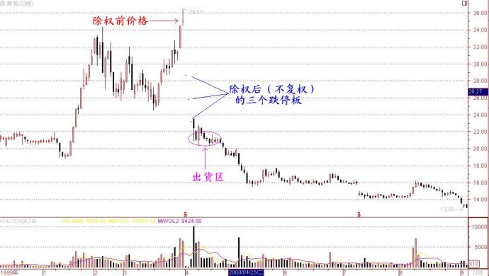
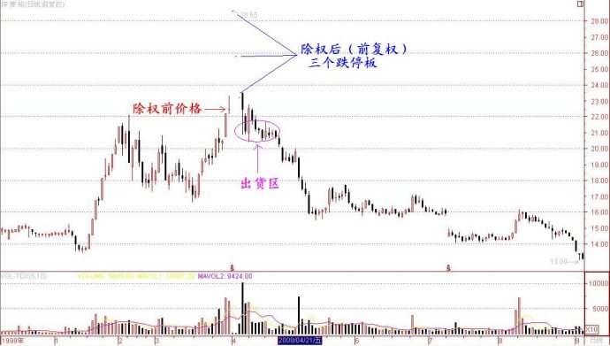

第238篇•我与《缠中说禅》博主李彪的三次对话（3）
谷为陵
在谈到出货的题材时，李彪说：“从以往的情况看，配合坐庄的题材无非是两类：一类是概念型题材，如现在的网络科技概念；另一类就是价格幻觉题材，比如高送股、高配股题材。对于出货来说，价格幻觉题材应该更重要一些。”
确实如此，在当时的庄家时代，凡是历史上出现过的一些大牛股，均是连续高送股、连续填满权的股票。但是，当这个价格幻觉游戏玩的久了，股民们还会永远上当吗？
对于这个问题，李彪也有同感，他说，当一种游戏玩的久了，大家就都知道其中的秘诀了，就会玩烂了，要再利用这个游戏骗别人的钱就难了。“所以”，他说：“庄家要成功，也要不断创新，创造一些新玩法。新玩法别人没见过，就容易让人入局。”
我说：“自这几年兴起坐庄以来，所有的玩法大家也都明白了，还有什么新玩法能够让股民们感到新鲜呢？”
这时候，李彪好像突然想起了什么，和我说：“对了，我和你说一只票，这只票我们正在做，就是一种即将绝种的新玩法。”。
我问：“哦，还有这样的事情？是什么股票？”
“深赛格”，他说。
我略一沉思，道：“这只股票我好像有点印象，它不是要高比例配股吗？”
他说：“对。这个高比例配股就是一种新玩法。你还记得去年8月中关村连续三个跌停板的事吧？”
我当然知道这个事情。中关村是借壳琼民源上市的，在上市前，就向全体流通股东按照10配10配股。由于深沪交易所计算除权公式不同，当法人股股东放弃配股时，在计算配股除权价格时，深市股票就会出现配股除权价升水的奇特一幕。而这个配股除权价升水现象在中关村这只股票上被演绎到了极致。1999年8月中关村增发新股后，除权价按上交所公式计算为19.79元，这也是真实的除权价格，但用深交所公式计算则为26.02元，要比真实的除权价格高出31%（笔者注：深市除权参考价计算公式为：除权参考价＝（股权登记日收盘价×原总股本＋配股价×配股比例）／（原总股本＋增发新股），沪市除权参考价＝（股价＋配股比例×配股价）／（１＋配股比例））。深交所认为他们的除权价计算公式比较客观合理地反映了配股后的股价实际稀释情况，而上交所则是按国际惯例以市价总值相等的原理制定公式，以流通股的配股比例为基准。但从实际情况来看，深交所的配股除权价格是虚高的。正因为中关村的配股除权价格较真实除权价格虚高30%，就使该股在除权后，原有持股者就凭空多赚了30%，原有持股者当然愿意在第一时间卖出这个股票，哪怕是在第一个跌停板卖出，也比原先的持股价高出20%，这个天上掉馅饼的好事，谁都愿意沾呀。但市场的其它投资者也并不傻，人人都知道中关村的除权价格虚高了30%，没有人愿意在中关村除权后，给原有持股者高位接盘，于是，该股就出现了在配股除权后连续三个无量跌停板的现象。在跌完这三个跌停板后，中关村的股价才与真实的配股除权价格接轨，到第三个跌停板时，其它投资者才蜂拥进场。
李彪说：“自从深交所推出这个配股除权计算公式后，我们就发现了其中可利用的机会。我们给深赛格量身定做了这个配股方案。按照现在的方案，假若我们将深赛格的股价从现在的20元拉高到35元除权，那么，深赛格的真实除权价应该在22．5元左右，但按照深交所计算出的除权价格却应该在32元左右，要高出40%多。”
我的疑问是，即使深赛格的配股除权价格虚高，但投资者也都知道这一点，在深赛格除权后，该股股价肯定会跌到其真实的除权价格的。也就是说，即使该股在除权后以32元开盘，股价也会如中关村一样，连续几个无量“一字跌停板”跌到23元左右，李彪怎样利用这个配股除权价格计算的差异获得溢价收益呢？
对于我的问题，李彪莞尔一笑，道：“看来你还没有真正明白中关村那三个跌停板的涵义。中关村在第三个跌停板时的价格，是否就相当于除权前的价格？”
“是的。中关村在跌到第三个跌停板时，等于没涨没跌。”
“中关村在跌到第三个跌停板时，是否打开了跌停板？”
“是的”。
“为什么中关村在第三个跌停板时，能够打开跌停板？”
“因为在牛市中，任何股票逆市出现三个跌停板，大家都会认为股价跌低了，该短线抄底了，于是跌停板就会被打开。”
李彪说：“这就是问题的关键。如果一只股票在连续暴跌三个无量“一字跌停板”后，铁定能够放巨量打开跌停板，那么，庄家就可以利用这个连续跌停板模式出货。”
我还是有点不明白的问：“即使深赛格能够在连续三个无量“一字跌停板”后，放巨量打开跌停板，对于你们来说，深赛格的股价也只是回到了除权前的价格，该股的股价并没有任何填权，没有任何溢价，你们的溢价收益体现在哪里呢？”
李彪说：“这是一个看似很简单，但却不容易深刻体会的问题。我们的收益就体现在除权前大幅拉升的那一段。你看看，现在深赛格的股价是20元，我如果从现在20元开始拉高出货，将股价最高拉到到35元，按照常理，我的平均出货价格是多少？”
我说：“应该不高于30元。折中算的话，大致会在26～28元。”
李彪说：“好，就按你说的。但不管你怎么算，平均出货价格再高也不会高到35元吧？”
我说：“那是当然。35元是股价最高价，谁有本事在股价的最高点将货全部出光呀。谁也做不到！”
李彪说：“我能做到。”
看着我满脸的疑惑，李彪说：“如果在股价35元除权，按照深交所计算出的除权价格会虚高40%，那就相当于股价复权后的价格将达到近50元。在除权后，股价从50元连续三个跌停板，就又跌回了35元（笔者注：从除权后的价格看，是从约32元跌到约23元）。而这个价格，是股票的第三个跌停板，在牛市时，这第三个跌停板┄┄”
“肯定会打开！”我抢着说道。我突然明白了，道：“这相当于你在35元将股票卖出了，只要今后几个交易日能够继续在这个价格附近放量成交，那么，你的主仓甚至所有仓位就很会以35元的最高价全部出光！”
李彪说：“正是这样。所以，深赛格这个10配8题材，要比10送10还好，这才是真正的价格幻觉，准确地说，这应该算是价格错觉，一连错了两次：先是在除权价格上出现了一次错觉，然后是在连续三个跌停板后又出现一次错觉。这个错觉就像是一个开着口的陷阱，虽然人人都能看见，但却无法逃脱被陷进去的命运，这真的让人难以理解。”
我说：“这也许就是你所说的创新游戏的魅惑吧。”
李彪说：“只能这样解释。我估计这种游戏不可能长久，也许深赛格就是终结者。”
这次谈话时间很长，在临走的时候，李彪还不忘告诉我，他们很快就要拉升深赛格了，我可以在现在的20元价格买一些，我对于他的诚意感激不尽。
果然，没过几天，深赛格股票股价就开始了启动，仅仅10个交易日，股价就从20元拉高到了33元。2000年3月31日是该股的配股登记日，当天该股最高冲到36.5元，收盘价恰是35元，不知是否是个巧合。在该股除权后的三个交易日，恰如我们所说的，该股出现了连续三个无量“一字跌停板”。但与我们当时的预见稍有不同的是，该股在第三个“一字跌停板”时，出现了买盘，有4.6%的换手率，但跌停板并没有打开。到了第四个交易日，该股不再跌停了，只是下跌了3%，但当天的换手率达到了23%。我知道，李彪他们这天开始大规模出货了，当天所有卖盘都应该是他们的。
但若从局外人来看的话，同样的市场现象却可以做不同的解释——深赛格在第4个交易日的放量，我知道是庄家在出货，这只票根本不能再碰；但不知情的投资者，却很可能认为，这只票在连续三个跌停板后，应该会有短期反弹了，现在该股已经放出巨量，说明有主力进场抄底了，该股应该还会上涨，在这种心理的驱使下，买盘就源源不断地进来了。这就是前面所说的，明明是开着口的陷阱，但人们却视而不见，还纷纷往下跳。
在其后的10个交易日里，该股股价一直维持在20元以上，但换手率却达到了83%。我想，李彪他们应该快走光了。我算了一下，李彪这次出货的平均价格相当于除权前32元，几乎是在股价最高点将货倒光了。自此之后的12年来，即使是在2007年大牛市的顶点，深赛格股价再也没有摸到过这个价位。可见，李彪他们当初下手有多狠。李彪人很好，但做起盘来，确是个冷血杀手。
为了让大家有更直观的印象，我特地附上了两张深赛格的配股除权图，第一张是不复权的，第二张是前复权的：
1、不复权图：

2、前复权图：

李彪他们从深赛格8～9元开始起庄，到32元将货全部倒出，虽然获利只有1～2倍，但这个钱赚的实在是太轻松。深赛格的成功，是巧妙利用了规则的漏洞，利用了人性的弱点，当然，最重要的是，非常敏锐地抓住了市场提供的机会。直到今天，我都认为深赛格是历史上设计得最巧妙、操作最顺畅、结果最完美的庄股，达到了庄家时代的最高境界。在深赛格整个操作过程中，上市公司没有发布过任何虚假信息，庄家没有使用任何骗线手段，一切操作都是顺其自然，如行云流水，毫无斧凿痕迹，拉升高度恰到好处，显得不温不火，这一切都透露出操作者的功力非凡。一只好的庄股，应该是较为低调，不惹市场过度关注，但庄家却能赚到大钱，日后还没有任何麻烦——管理层不管，投资者不恨，还有，能够让人事后还不留下什么特别的印象，如飞鸟无痕般。这些深赛格都做到了。
在2000年9月，我和李彪又见过一面。他真是一个大忙人，他们从亿安科技和深赛格撤出来后，又马不停蹄地参与了深安达（000004，现名国农科技）的炒作。这次见面，我们主要谈了一下对于未来市场的看法，囿于篇幅，在此就不赘述了。
我虽然只与李彪见了三次面，但他给我的印象和影响极深。在与他相见之前，我也见到过、接触过不少的庄家和大机构，也算是见过世面的，但那些庄家和机构，在坐庄时都是按照棋理下棋，一板一眼的，基本套路都很相似，打的都是传统的阵地战——拼的是资金实力和社会资源实力。但李彪却不然，他是剑走偏锋，做事非常飘逸，甚至可说是有点诡异，像个轻功高手，打的都是“斩首战”——动用资源不多，但效果很大。
李彪是一个做局的高手，善于设计项目；他也是一个操盘高手，发展出了自己独特的方法。我到现在也没有搞明白，李彪的这些本事到底是在哪里学的。难道真的是无师自通？
还真有这个可能。在看了《缠中说禅》后，我才知道李彪的古文和古诗词写得相当之好，很有功力，他竟然还和孔庆东在《论语》和古诗上叫板了好几次。以其之聪慧，在股票上自悟不是不可能。只可惜天妒英才，在他生命最闪光之时，却飘然而去了。
我谨以本文纪念之。
（全文完）